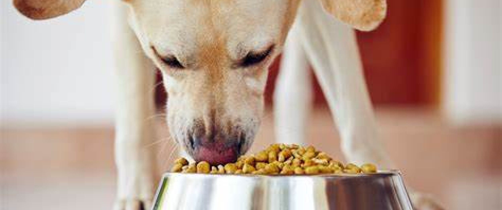
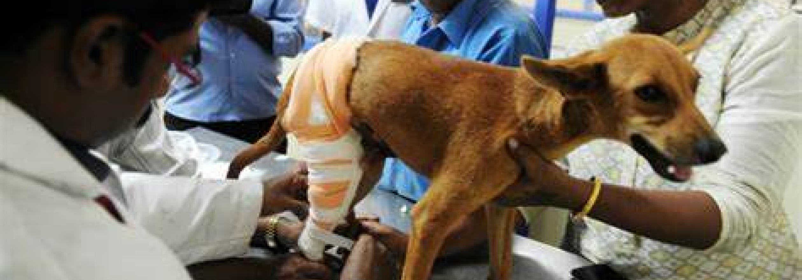
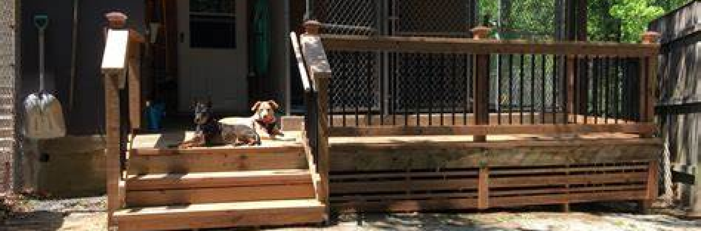

You can passively adopt any of the shelter animals. WSA will look after them and feed and vaccinate them for small contribution from your end.
The one day meal covers the morning and evening feed for a day for our pets.
Miner surgery
Save the life of recued animals by helping them undergo the required surgery.
Shelter
Pet food generally consists of meat, meat byproducts, cereals, grain, vitamins, and minerals. Typically sold in pet stores and supermarkets, it is usually specific to the type of animal, such as dog food or cat food.
How To Manage Your pets?